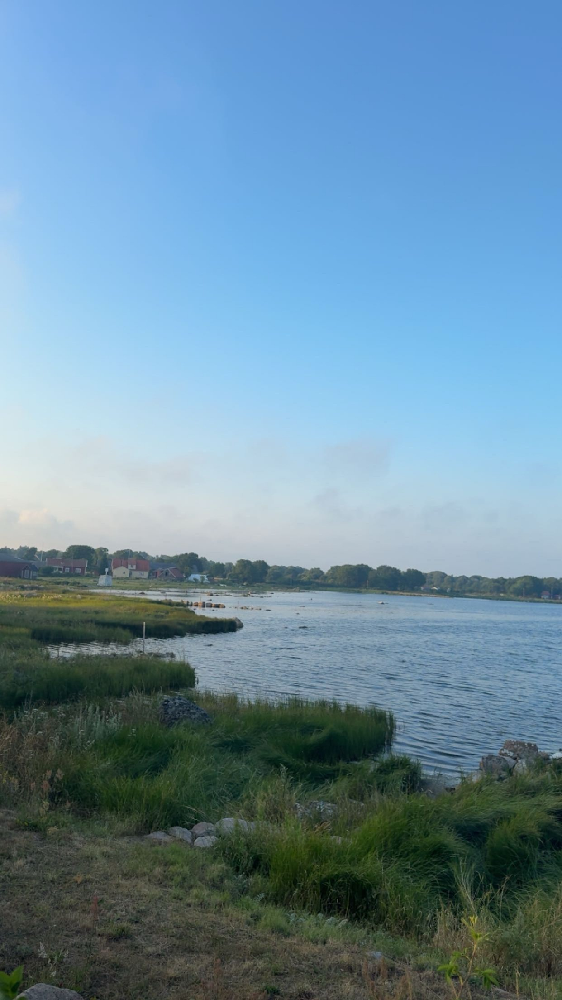
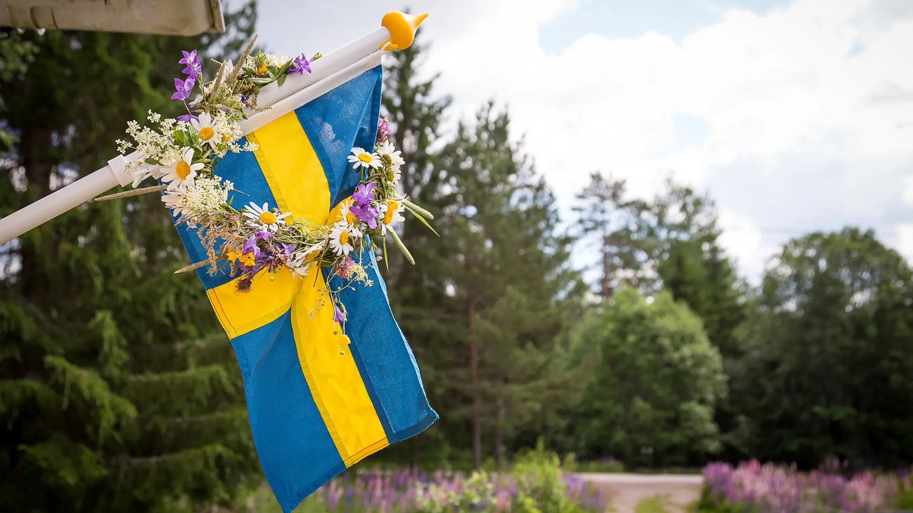
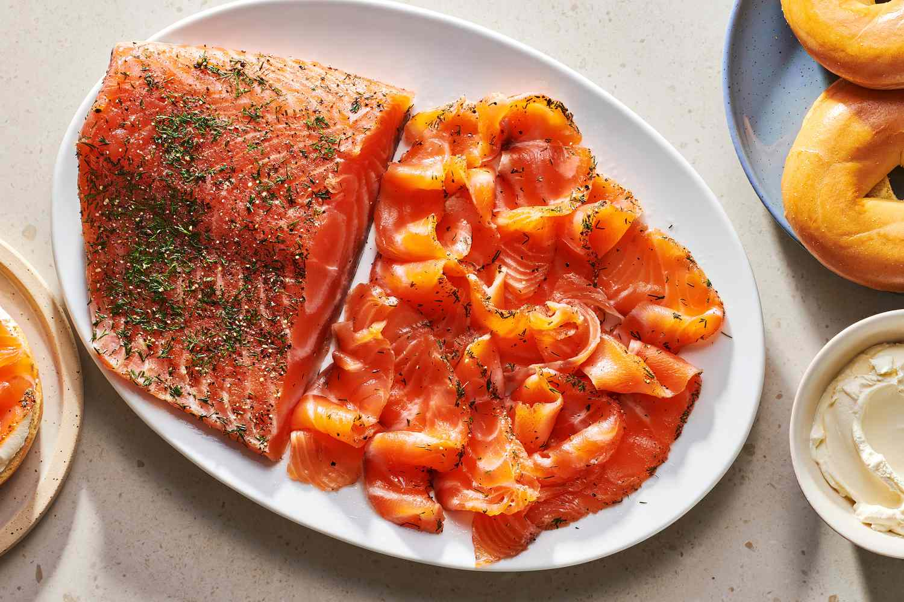
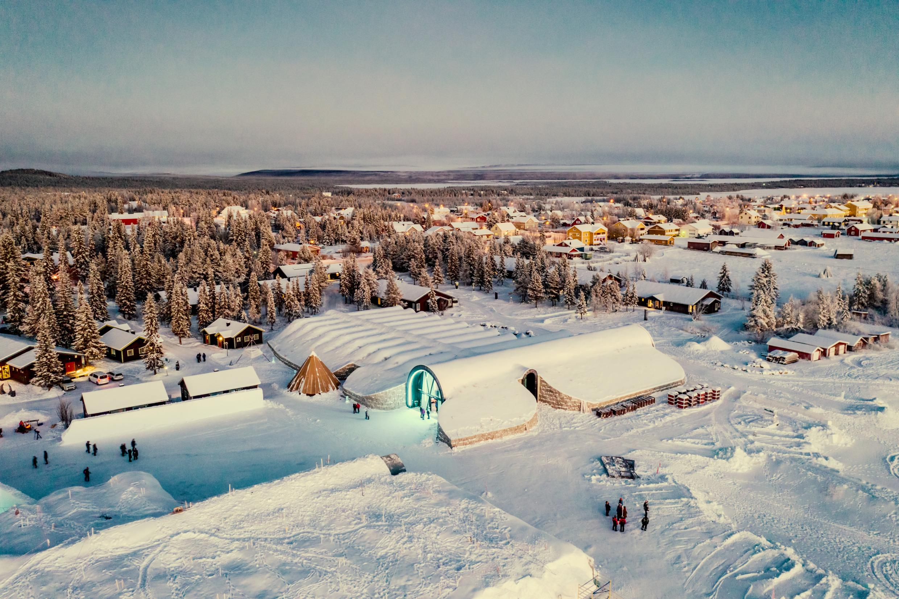

Schweden ist eines der grössten und modernsten Länder Europas.
Es liegt im Norden des Kontinents und gehört zur Region Skandinavien.
Das Land ist bekannt für seine beeindruckende Natur mit grossen Wäldern,
tausenden Seen und einer langen Küstenlinie. Gleichzeitig gehört Schweden
zu den innovativsten Ländern der Welt und ist bekannt für Technologie,
Umweltbewusstsein und eine hohe Lebensqualität.
Viele Menschen verbinden Schweden mit Ruhe, Natur und einem guten Sozialsystem.
Das Land legt grossen Wert auf Gleichberechtigung, Bildung und Nachhaltigkeit.
Durch diese Faktoren gehört Schweden zu den Ländern mit der höchsten Lebensqualität
weltweit.
1. Allgemeine Informationen

2. Steckbrief
Offizieller Name: Königreich Schweden
Hauptstadt: Stockholm
Einwohner: ca. 10,5 Millionen
Fläche: ca. 450'000 km²
Sprache: Schwedisch
Währung: Schwedische Krone (SEK)
Staatsform: Konstitutionelle Monarchie
Staatsoberhaupt: König Carl XVI. Gustaf
Regierungschef: Ministerpräsident
EU-Mitglied:Seit 1995
Nationalfeiertag: 6. Juni

3. Geschichte
Die Geschichte Schwedens reicht weit zurück bis in die Zeit der Wikinger.
Zwischen etwa 800 und 1050 nach Christus waren die Wikinger bekannte Seefahrer,
Händler und Entdecker. Die schwedischen Wikinger reisten vor allem Richtung
Osten bis nach Russland und Byzanz. Im 17. Jahrhundert entwickelte sich Schweden
zu einer militärischen Grossmacht in Europa. Das Land kontrollierte damals grosse
Teile des Ostseeraums. Diese Zeit wird oft als die Grossmachtzeit Schwedens bezeichnet.
Seit dem 19. Jahrhundert verfolgt Schweden jedoch eine Politik der Neutralität.
Das Land blieb sowohl im Ersten als auch im Zweiten Weltkrieg neutral. Heute ist Schweden
bekannt für seine Friedenspolitik und seine Beteiligung an internationalen Organisationen.
4. Geografie und Natur
Die Landschaft Schwedens ist sehr abwechslungsreich. Im Süden findet man vor allem
Landwirtschaft und grössere Städte. Der Norden hingegen ist geprägt von grossen Wäldern,
Bergen und Wildnis. Etwa 70 Prozent der Landesfläche bestehen aus Wald. Zudem gibt
es über 100'000 Seen. Diese Landschaft macht Schweden zu einem Paradies für Naturliebhaber.
Eine besondere Region ist Lappland im Norden des Landes. Dort ist das Klima deutlich
kälter und die Bevölkerung sehr dünn. Diese Region ist bekannt für Polarlichter im Winter
und die Mitternachtssonne im Sommer. Ein wichtiger Bestandteil der schwedischen Kultur
ist das sogenannte Jedermannsrecht. Dieses erlaubt allen Menschen, sich frei in der Natur
zu bewegen, solange sie respektvoll mit der Umwelt umgehen.
5. Klima
Zwei besonders bekannte Naturphänomene sind die Mitternachtssonne und die Polarlichter.
Während im Sommer im Norden die Sonne teilweise nicht untergeht, kann man im Winter
spektakuläre Polarlichter am Himmel beobachten.
Aufgrund seiner großen Nord-Süd-Ausdehnung hat Schweden verschiedene Klimazonen.
| Merkmal | Südschweden | Nordschweden |
|---|---|---|
| Klima | eher mild | deutlich kälter |
| Sommer | ca. 20–25 °C | ca. 10–20 °C |
| Winter | ca. 0 bis –10 °C | bis unter –30 °C |
| Schnee | weniger Schnee | viel Schnee |
| Tageslicht im Sommer | normale Tageslänge | Mitternachtssonne (24h hell) |
| Tageslicht im Winter | kürzere Tage | nur wenige Stunden Licht |
| Natur | Städte, Landwirtschaft | Wälder, Berge, Wildnis |
| Bevölkerung | dichter besiedelt | sehr dünn besiedelt |
6. Bevölkerung und Gesellschaft
Die schwedische Gesellschaft gilt als sehr modern und offen. Gleichberechtigung
zwischen Männern und Frauen ist ein zentraler Wert. Auch Themen wie Umweltschutz
und soziale Gerechtigkeit sind sehr wichtig. Der Staat bietet ein starkes Sozialsystem.
Dazu gehören eine gute Gesundheitsversorgung, kostenlose Schulbildung und Unterstützung
für Familien. Eltern erhalten beispielsweise lange Elternzeit nach der Geburt eines Kindes.
Viele Schweden legen grossen Wert auf ein ausgeglichenes Leben zwischen Arbeit und Freizeit.
Dieses Prinzip nennt man oft Work-Life-Balance. Die Menschen gelten allgemein als eher
ruhig, höflich und respektvoll. Pünktlichkeit und Zuverlässigkeit sind ebenfalls wichtige
Werte im Alltag.
7. Essen und Spezialitäten
Die schwedische Küche basiert stark auf einfachen und natürlichen Zutaten.
Besonders wichtig sind Fisch, Kartoffeln und Fleisch. Auch Beeren und Pilze spielen eine grosse
Rolle, da viele Menschen diese selbst in der Natur sammeln.
Das bekannteste Gericht sind die Köttbullar, kleine Fleischbällchen, die traditionell mit
Kartoffelpüree, Rahmsauce und Preiselbeeren serviert werden. Auch eingelegter Lachs, sogenannter
Gravlax, ist sehr beliebt.
Eine besonders wichtige Tradition ist die sogenannte Fika. Dabei handelt es sich um eine
Kaffeepause, die oft mit Gebäck wie Zimtschnecken verbunden ist. Diese Pause dient nicht nur der
Erholung, sondern auch dem sozialen Austausch.
Beliebte Gerichte
Köttbullar– klassische Fleischbällchen
mit Kartoffelpüree

Gravlax – mariniert mit Dill und Zucker,
traditioneller Lachs

Fika Gebäck – süßes Gebäck
für die schwedische Kaffeepause
8. Kultur und Traditionen
Eine der wichtigsten Traditionen in Schweden ist das Mittsommerfest.
Dieses Fest wird im Juni gefeiert und symbolisiert den Beginn des Sommers.
Die Menschen tanzen um einen geschmückten Maibaum, tragen Blumenkränze und feiern gemeinsam
mit Familie und Freunden.
Ein weiteres wichtiges Fest ist das Luciafest im Dezember. Dieses Fest symbolisiert Licht in
der dunklen Winterzeit. Kinder tragen dabei weisse Gewänder und singen traditionelle Lieder.
Ein wichtiges kulturelles Konzept ist das Wort Lagom. Es bedeutet, dass alles in einem gesunden
Gleichgewicht sein sollte – also nicht zu viel und nicht zu wenig. Diese Einstellung beeinflusst
viele Bereiche des schwedischen Lebens.
9. Wirtschaft und Innovation
Schweden gehört zu den wirtschaftlich stärksten Ländern Europas.
Besonders wichtig sind die Technologiebranche, die Industrie und die Modebranche.
Viele weltweit bekannte Unternehmen stammen aus Schweden. Dazu gehören unter anderem IKEA,
Volvo, Spotify und H&M. Diese Firmen haben Schweden international bekannt gemacht.
Das Land investiert viel Geld in Forschung und Innovation. Besonders im Bereich der
Umwelttechnologie nimmt Schweden eine führende Rolle ein. Viele Städte setzen stark auf
erneuerbare Energien und nachhaltige Lösungen.
10. Tourismus und Sehenswürdigkeiten
Schweden ist ein beliebtes Reiseziel für Menschen, die Natur und Ruhe suchen.
Besonders bekannt ist die Hauptstadt Stockholm mit ihrer historischen Altstadt Gamla Stan.
Dort gibt es viele alte Gebäude, Museen und das Königsschloss.
Im Norden ist der Abisko Nationalpark ein beliebtes Ziel für Touristen, die Polarlichter
sehen möchten. Auch das berühmte Icehotel in Kiruna zieht viele Besucher an. Dieses Hotel
wird jedes Jahr neu aus Eis gebaut.
Die vielen Inseln vor Stockholm, die sogenannten Schären, sind ebenfalls sehr beliebt.
Dort kann man Boot fahren, wandern oder einfach die Natur geniessen.
Beliebte Sehenswürdigkeiten

Gamla Stan – die historische Altstadt
von Stockholm

Abisko Nationalpark – beeindruckende
Natur mit Wanderwegen

Icehotel – berühmtes Hotel aus Eis und Schnee,
das jedes Jahr neu gebaut wird
11. Fun Facts
🏝️Schweden hat ca. 221.800 Inseln – das inselreichste Land der Welt
🍔⛷️Erster McDonald’s-Drive-In für Skifahrer in Schweden
🌞Mitternachtssonne im Norden: Sonne geht wochenlang nicht unter
🌲In Schweden gibt es mehr Bäume als Menschen
⛺Offizielles Recht auf Naturzugang („Allemansrätten“) – zelten & wandern erlaubt
📚Pippi Langstrumpf stammt aus Schweden
🐱In Schweden gibt es Hotels nur für Katzen
☕Schweden sind weltmeister im Kaffeetrinken
🏠Fast jeder Haushalt oder Betrieb in Schweden besitzt eine Sauna.
🦌In Schweden gibt es mehr Elche als in jedem anderen europäischen Land